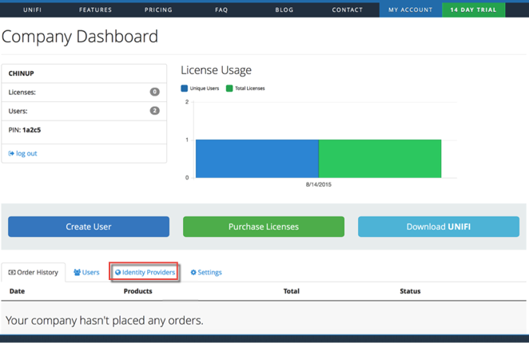
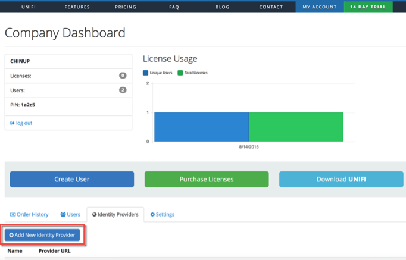
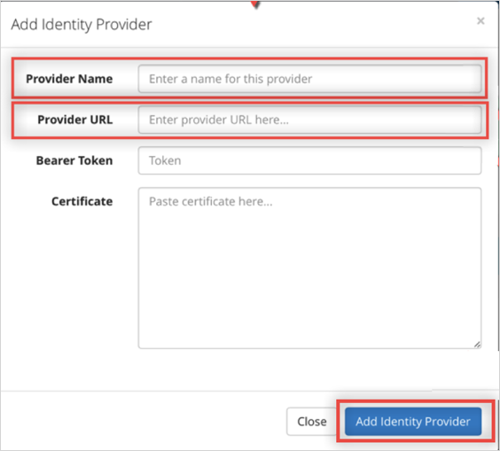
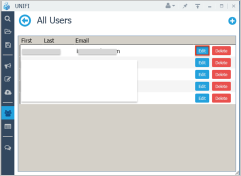

Login to your Unifi account as an administrator.
Navigate to My Account > Users, then click the Add New Identity Provider button.

On the Add Identity Provider page, do the following:
Provider Name: Enter Okta.
Provider URL: Copy and paste the following:
Sign into the Okta Admin Dashboard to generate this variable.
Certificate: Copy and paste the following:
Sign into the Okta Admin Dashboard to generate this variable.
Click the Add Providerbutton.

To enable Identify Provider for User:
Log in to the Unify desktop application as a company administrator.
Open the User Management tab in the left menu.
Click the Users button.

Click Edit for the required user:

Select Okta from the Identity Provider drop down menu, then click Save User.
Done!
Notes:
IdP-initiated flows are supported.
SP-initiated flows and Just In Time (JIT) provisioning are not supported.